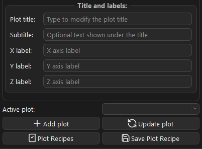
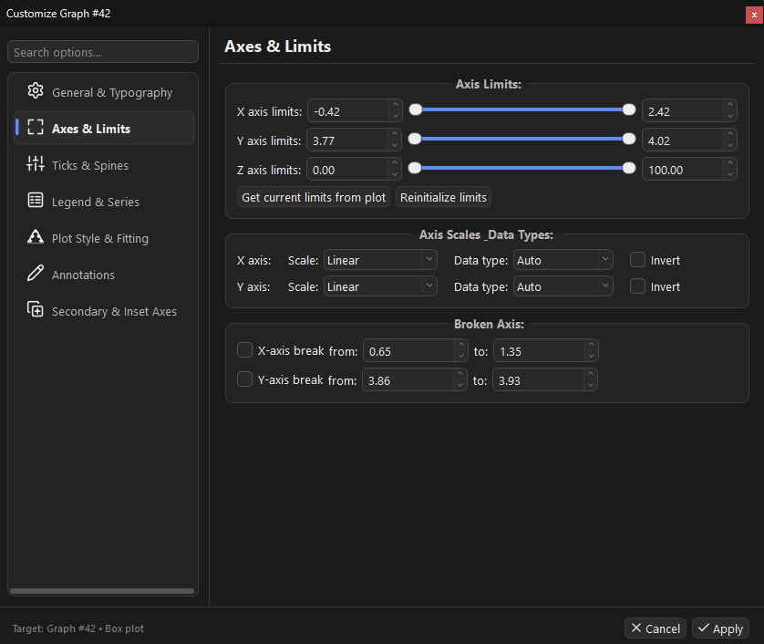
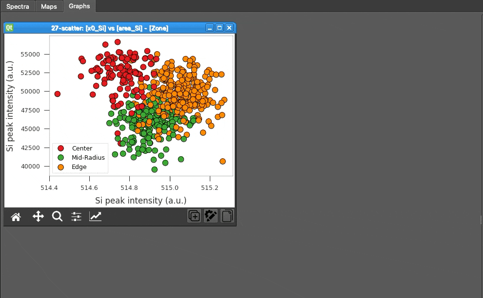
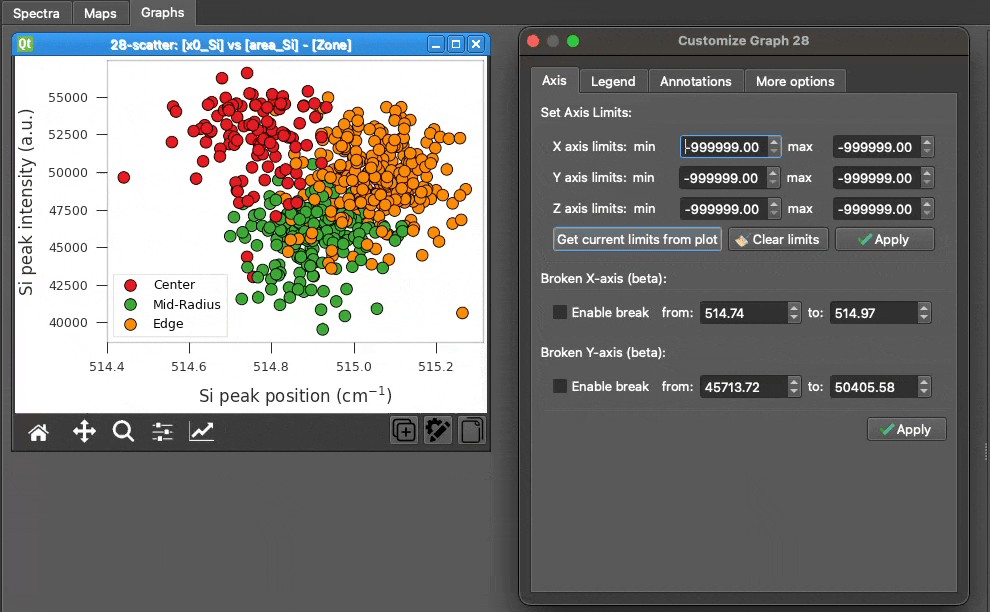
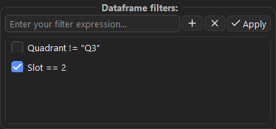

图表工作区
工作区：图表¶
图表 (Graphs) 工作区专注于数据可视化，在设计上尤为注重简洁性、响应速度与高度可定制性。

图表工作区界面概览。
1. 加载数据¶
数据集可从 光谱 (Spectra) 和 二维图谱 (Maps) 工作区无缝传递而来，也可直接从外部 Excel/CSV 文件导入。所有可用数据集都会被动态追踪，并显示在数据集列表控件中。

四个可用的功能按钮可帮助您执行以下操作：
- View：原生查看数据表内容。
- 删除 (Delete)：从工作区中移除该数据集。
- 保存 (Save)：将数据集导出为 Excel 或 CSV 文件。
- Refresh：当 CSV/Excel 文件在外部被修改时，动态重新加载该文件。
2. 添加或更新图表¶
- 从列表中选择目标数据集。
- 使用提供的下拉菜单为 X、Y 和 Z 轴选择合适的数据列。
- 选择所需的图表类型（可选样式：散点图 (scatter)、点图 (point)、柱状图 (bar)、箱线图 (box)、折线图 (line)、趋势线 (trendline)、直方图 (histogram)、二维图谱 (2Dmap)、晶圆图 (wafer)）。
- 设置图表标签、坐标轴范围以及晶圆直径尺寸（如适用）。
- 点击 添加图表 (Add plot) 生成可视化图表。

添加新图表或更新现有图表的操作演示。
3. 共享图表工具栏¶
工作区底部栏集成了所有全局控制按钮以及一个共享图表工具栏，该工具栏始终作用于当前处于活动状态的图表窗口。如需激活某个图表，只需直接点击该窗口，或在侧边面板的 Active plot 下拉菜单中选择（位于 添加图表 / 更新图表 (Update plot) 按钮上方）。
| 控件 | 说明 |
|---|---|
| Delete all | 从工作区中删除所有图表。 |
| Minimize all | 最小化所有图表窗口。 |
| 撤销 (Undo) / Redo | 在工作区的编辑历史中向后撤销或向前重做（Ctrl+Z / Ctrl+Shift+Z）。 |
| Compose Figure | 将多个已打开的图表组合导出为单个多子图图像。 |
| Home / Pan / Zoom / Subplots | 标准 Matplotlib 导航工具：重置视图、平移、框选放大，或调整子图边距。 |
提示：当通过拖拽图表窗口边缘或标题栏来调整大小或移动窗口时，界面会先显示轮廓框。松开鼠标后，图表才会按新尺寸一次性重绘，从而确保即使面对大型图表也能流畅调整窗口大小。同理，在平移视图期间，坐标轴周围的边距保持固定，待松开鼠标后再重新计算。
一条垂直分隔线标志着当前图表专属控制按钮的起始位置——这些按钮始终对齐窗口右边缘：
| 控件 | 说明 |
|---|---|
| Replicate | 创建当前活动图表的副本。 |
| Customize | 为当前活动图表打开 Customize Graph Dialog（Ctrl+E，详见下文）。 |
| 复制 (Copy) | 将当前活动图表的图像复制到剪贴板（Ctrl+C）。 |
| Export | 点击可将当前活动图表导出为文件。按住 Ctrl 并点击 可改为一次性导出所有已打开的图表。 |
| Style menu (🎨) | 保存/应用样式、复制/粘贴样式（Ctrl+V 粘贴）、恢复默认样式，或将当前样式设为新建图表的默认样式。 |
注意：上述
Ctrl+Z、Ctrl+Shift+Z、Ctrl+C、Ctrl+V和Ctrl+E快捷键仅在 图表 标签页处于活动状态时生效，不会干扰应用程序其他位置（例如在文本框中输入内容时）的相同快捷键操作。
4. 自定义图表¶
您可以通过右侧面板（Right Panel）快速修改坐标轴标签及图表标题。点击 更新图表 按钮即可立即应用更改：

通过右侧面板自定义所选图表。点击“更新图表”按钮即可应用更改。
如需高级自定义，请点击 Customize 按钮（⚙）打开 Customize Graph Dialog（Ctrl + E）。该对话框采用类似现代化“设置”界面的双栏布局，支持跨所有选项的实时全局搜索、响应式的左侧类别导航，以及在七个模块化类别内对匹配选项自动高亮并滚动定位：
- 常规与字体排版 (General & Typography)：图像主题（浅色/深色）、网格线、X 轴标签旋转、字号大小（标题、轴标签、刻度标签、色标）以及智能数据排序。
- 坐标轴与范围 (Axes & Limits)：带交互式范围滑块（位于顶部）的坐标轴范围、X/Y/Z 主刻度（线性、对数、对称对数、居中）、数值/分类数据类型、坐标轴反转以及断轴区间。
- Ticks & Spines：刻度线方向、刻度标签格式预设、次刻度线（顶部、底部、左侧、右侧）以及坐标轴边框线（spines）的可见性。
- Legend & Series：图例框放置位置（图内/图外）、边框、列数、标题、字号、透明度（alpha）、方位、全局标记样式，以及左对齐的逐系列样式配置表。
- 图表样式与拟合 (Plot Style & Fitting)：特定图表类型选项（连接数据点、错开重叠点、晶圆统计摘要）、统一的误差棒控制（显示开关、统计类型、端帽宽度）、带锚点与实时方程表的趋势线多项式拟合，以及直方图分箱与 KDE 密度曲线设置。
- Annotations：图表可视化标注（垂直线、水平线、文本、箭头、垂直区域、水平区域、矩形框、引线标注），支持在画布上直接拖拽移动及弹窗编辑。
- 副坐标轴与放大插图 (Secondary & Inset Axes)：双坐标副轴（Y2、Y3、X2，支持独立标签、范围、对数刻度、颜色及标记）以及带引导连接线的局部放大插图子坐标轴。
所有选项卡中的修改均通过对话框底部的统一 应用 (Apply) 按钮一并生效，或点击 取消 (Cancel) 放弃更改。
4.1 “坐标轴与范围”、Ticks & Spines 及“副坐标轴与放大插图”¶

Customize Graph Dialog 中的坐标轴配置。
坐标轴与范围、Ticks & Spines 和 副坐标轴与放大插图 类别用于控制坐标轴刻度缩放、数据类型、范围限制、刻度与边框外观、断轴、局部放大插图以及双坐标副轴。标题、轴标签与刻度的字号设置位于 常规与字体排版 类别中。
坐标轴属性（坐标轴与范围）¶
使用下拉菜单为每个坐标轴独立配置刻度和数据类型：
| 设置 | 选项 | 说明 |
|---|---|---|
| X / Y axis Scale | 线性 (Linear)、对数 (Logarithmic)、对称对数 (Symlog) | 在线性、对数和对称对数刻度之间切换坐标轴。仅当底层数据为数值型时，才会应用对数刻度。 |
| X / Y axis Data type | 自动 (Auto)、分类 (Category)、数值 (Numerical) | 控制如何解析坐标轴数值。自动（默认）：应用程序自动检测最佳类型——若 100% 的数据均为数值则设为数值型，否则设为分类型。分类：强制按离散分类索引。数值：强制采用连续数值刻度。 |
| Z axis Scale (仅适用于 晶圆图 / 二维图谱) | 线性、对数、居中 (Centered) | 设置热图的色标归一化方式。对数可压缩跨度较大的数值范围（若数据并非严格为正，则回退至线性刻度）。居中可将色图中点固定在您输入的 Center value 上——非常适合以 0 为中心的发散型数据（如应力/应变）。 |
注意：使用 数值 数据类型时，坐标轴采用真实的数学刻度，间距直接反映实际数值大小。使用 分类 时，无论数值大小如何，每个唯一值均呈等间距排列。
设置坐标轴范围（坐标轴与范围）¶
通过指定 min 和 max 值，手动限定各坐标轴（X、Y、Z）的可见范围：
| 控件 | 说明 |
|---|---|
| X / Y / Z axis limits | 输入最小值（min）和最大值（max）以限制可见范围。将微调框留空不设（此时会以灰色显示当前图表的实际边界值），即可保持该侧自动缩放。 |
| 从当前图表获取范围 (Get current limits from plot) | 捕获当前图表的实际可见范围并填入微调框，适合作为精细调整前的起始基准。 |
| Clear limits | 将所有坐标轴范围重置为自动模式（不受限制）。 |

调整所选图表的坐标轴范围。
坐标轴外观（Ticks & Spines）¶
| 控件 | 说明 |
|---|---|
| Minor ticks (X 底部 (Bottom)/顶部 (Top)、Y 左侧 (Left)/右侧 (Right)) | 独立启用图表各边缘的次刻度线。默认情况下，仅在表示数值的坐标轴上自动启用次刻度线（例如 散点图/折线图/直方图 的 X 轴和 Y 轴，以及 柱状图/箱线图/点图 的 Y 轴），而在分类轴或图谱上隐藏次刻度线。用户可为任意坐标轴单独开启或关闭次刻度线。 |
| Show spines (顶部/右侧/底部/左侧) | 独立切换图表四条外边框线的显示或隐藏。 |
| Tick direction | 默认 (Default)、向内 (In)、向外 (Out) 或 双向 (In & Out)。 |
| Tick label format | 自动、Integer、1-decimal、2-decimal 或 Scientific。 |
断轴（坐标轴与范围 — Beta）¶
在坐标轴上创建视觉断点，省略不关注的数值区间，从而聚焦关键数据区域：
| 控件 | 说明 |
|---|---|
| X 轴断轴 (X-axis break) | 启用并指定要在 X 轴上断开的 from / to 区间。 |
| Y 轴断轴 (Y-axis break) | 启用并指定要在 Y 轴上断开的 from / to 区间。 |
注意：该功能目前处于 Beta 测试阶段。断轴在线性刻度下效果最佳。
局部放大插图坐标轴（副坐标轴与放大插图）¶
在主绘图区域内部绘制某一局部区域的放大子图：
| 控件 | 说明 |
|---|---|
| Enable inset axes | 开启或关闭局部放大插图视图。 |
| Position (x0, y0) / Size (w, h) | 插图框的位置与尺寸，以占绘图区域的比例（0–1）表示。 |
| X / Y limits | 插图所放大的数据范围。保留默认的灰色状态即可自动适配。 |
| Show zoom indicator | 从插图框向主图中被放大的对应区域绘制引导连接线。 |
注意：局部放大插图与断轴互斥——启用其中一项会自动禁用另一项。
副坐标轴（副坐标轴与放大插图）¶
在独立坐标刻度上绘制额外的 Y 数据列（或第二列 X 数据），每个坐标轴对应一行（Y2、Y3、X2）。一旦为该坐标轴分配了数据列，对应行即会被激活，您可为其设置 标签 (Label)、Min/Max 范围、对数刻度 (Log scale) 开关、颜色 (Color) 和 标记 (Marker)。
4.2 Legend & Series¶

Customize Graph Dialog 中的 Legend & Series 类别。
Legend & Series 类别用于自定义图表图例的外观与位置，以及各个数据系列的颜色、标记、透明度（alpha）和线宽。
图例框与系列样式¶
| 控件 | 说明 |
|---|---|
| Put legend box outside | 将图例框移至绘图区域右侧，避免遮挡数据。取消勾选则将其放置于图内。 |
| Unify marker size / edge color | 默认勾选：顶部统一的标记大小与边框颜色控件将应用于所有系列。取消勾选后，下方表格会展开逐系列的标记大小与边框颜色列（适用于 散点图/点图/趋势线 样式），便于对每个系列单独设置大小与边框。 |
| 标签 | 编辑每个数据系列在图例中的显示名称。 |
| 标记 | 为每个系列选择标记符号（适用于 点图/散点图）。 |
| 颜色 | 从预设调色板中为每个系列选择颜色。 |
| 透明度 (Alpha) / 线宽 (Line width) | 逐系列的透明度设置，以及带连线样式（折线图、趋势线，或启用了 Join 的 点图）的线条宽度。 |
提示：您可以使用鼠标直接在绘图画布上将图例框拖拽至任意位置。

调整所选图表的图例与颜色。
图例样式¶
| 控件 | 说明 |
|---|---|
| Columns / Frame / Title / Font size / 透明度 / 位置 (Position) | 图例框本身的布局与外观设置。 |
4.3 Annotations¶

Customize Graph Dialog 中的 Annotations 类别。
Annotations 类别支持在图表上方叠加参考线、形状及文本标注。
添加标注¶
点击顶部的任意按钮，即可在当前图表视图的中心位置添加对应标注：
| 按钮 | 说明 |
|---|---|
| 垂直线 (V-Line) / 水平线 (H-Line) | 添加垂直/水平参考线（默认：红色/蓝色，虚线）。 |
| 文本 (Text) | 添加带圆角背景框的文本标签（默认：黄色背景）。 |
| 箭头 (Arrow) | 添加连接两点的指示箭头。 |
| 垂直区域 (V-Span) / 水平区域 (H-Span) | 在两个数值之间添加带阴影的垂直/水平条带区域。 |
| 矩形框 (Box) | 添加实心填充或仅描边的矩形框。 |
| 引线标注 (Callout) | 添加带有指向特定数据点箭头的文本标签。 |
管理标注¶
当前所有标注均会列于按钮下方。选中某项标注即可点击 Edit 进行编辑或点击 删除 将其移除。每种标注类型的编辑对话框都会公开其相关属性——线/区域/矩形框的颜色、线型与线宽；文本内容、字号、颜色与背景色；箭头/引线标注的端点与指向位置。
提示：标注可直接在绘图画布上拖拽移动。保存工作区时，标注位置将被持久化保留。在画布上双击某项标注同样可打开其编辑对话框。

调整所选图表上标注的位置与外观。
4.4 “常规与字体排版”及“图表样式与拟合”¶

Customize Graph Dialog 中的字体排版、排序及特定样式选项。
常规与字体排版 与 图表样式与拟合 类别汇总了全局字体排版、主题和排序设置，以及特定图表样式的专属控制项（误差棒、趋势线和直方图）。
图表样式选项与误差棒（图表样式与拟合）¶
这些控件会根据当前激活的图表类型自动调整：
| 选项 | 适用类型 | 说明 |
|---|---|---|
| Join data points | 点图 | 用线段连接不同类别间的均值点。 |
| Dodge overlapping points | 点图 | 水平错开重叠的颜色分组，避免数据点相互遮挡。 |
| Dodge overlapping points | 散点图 | 在散点图中水平错开重叠的颜色分组。 |
| Show statistics summary | 晶圆图 | 在晶圆图上叠加显示统计摘要（均值、标准差、最小值、最大值、均匀性）。 |
| Show error bars | 柱状图 | 在每根柱子顶部显示误差棒。 |
| Error bar type | 点图、折线图、柱状图 | 标准差 (Std. Dev.)、标准误 (Std. Error)、95% 置信区间 (95% CI) 或 无 (None)（具体可用选项取决于图表类型）。 |
| Cap size | 点图、折线图、柱状图 | 误差棒末端水平端帽的宽度。 |
显示、网格与字号（常规与字体排版）¶
| 选项 | 适用类型 | 说明 |
|---|---|---|
| Figure theme | 所有类型 | 图像配色方案：浅色 (Light) 或 深色 (Dark)。 |
| X label rotation | 所有类型 | 旋转 X 轴刻度标签（0–90°）。 |
| 显示网格线 (Show grid lines) | 所有类型 | 切换图表背景网格线的显示状态。 |
可独立设置 Title、Axis label、Tick label 和 Colorbar 的磅值字号（默认值：12/12/9/10）。其中 Colorbar 大小控制 晶圆图/二维图谱 色标上的刻度标签文本字号。副标题没有单独的字号控件——它始终比主标题小 2 pt；其文本内容需在侧边面板中编辑，而非在此处设置。
数据排序（常规与字体排版）¶
控制分类与图例条目的排列顺序：
| 选项 | 说明 |
|---|---|
| 启用智能数据排序 (Enable intelligent data sorting) | 若勾选，将在绘图前对底层数据集进行确定性排序（推荐）。若取消勾选，图表将严格保留数据集原始的行顺序。 |
| Sort by | 启用排序时，选择用于排序的目标轴： - Z（颜色分组值） (Z (hue values))：优先按图例分组对类别排序（默认）。 - X 数值 (X values)：按 X 轴类别排序。 - Y 数值 (Y values)：依据 Y 指标对数据进行升序排列。 |
注意：如果您的数据集已经预先排序且希望明确保持原有序列，禁用智能数据排序会非常实用。当更改排序设置时，图例颜色会自动重置为默认调色板序列，以确保形成清晰的按位置对应配色方案。
趋势线设置（图表样式与拟合）¶
仅当图表类型为 趋势线 时可见：
| 选项 | 说明 |
|---|---|
| 多项式阶数 (Polynomial order) | 设置多项式拟合的阶数（1 = 线性，2 = 二次，…，最高 10 阶）。 |
| 锚点 (Anchor point) | 约束拟合曲线强制通过指定定点。可选择 Origin (0, 0)，或输入 custom (X₀, Y₀)。 |
| Fit equation(s) | 在表格中显示每个颜色分组的拟合方程及 R² 值。点击 复制 可导出为制表符分隔的文本（可直接粘贴至 Excel）。 |
直方图设置（图表样式与拟合）¶
仅当图表类型为 直方图 时可见：
| 选项 | 说明 |
|---|---|
| Bins | 直方图分箱数量（2–500，默认：20）。 |
| Overlay KDE curve | 在直方图上叠加一条平滑的核密度估计（KDE）曲线。 |
| Fill style | 选择 实心填充 (Filled) 柱状（默认）或 Step（仅轮廓阶梯线）。 |
色标刻度（晶圆图 / 二维图谱）：色标归一化方式（线性 / 对数 / 居中）位于 坐标轴与范围 中，对应选项为 Z axis Scale。
5. 数据筛选¶
您可以通过在 Filter 字段中输入格式为 (column_name) (operator) (value) 的布尔逻辑表达式，动态筛选参与绘图的数据。
注意：字符串值必须使用双引号括起（
"text"）。包含空格的列标题必须使用反引号括起（`column name`）。

演示如何对数据集动态应用筛选条件的示例。
| 筛选表达式 | 效果说明 |
|---|---|
Confocal != "high" |
排除“Confocal”列等于“high”的所有数据点。 |
Thickness == "1ML" or Thickness == "3ML" |
仅包含“Thickness”列严格等于“1ML”或“3ML”的数据点。 |
`Laser Power` <= 5 |
包含“Laser Power”列小于或等于 5 的数据点。 |
6. 统计计算与拟合详情¶
对于统计类图表样式（点图、柱状图、箱线图 和 趋势线），SPECTROview 会自动计算核心统计指标并可视化展示您的数据分布。
6.1 点图与柱状图¶
- 中心值（均值）：主数据点（点图 中的圆形标记或 柱状图 中的柱顶）表示给定 X 分类下所有 Y 值的算术平均值。
- 误差棒（95% 置信区间）：从均值延伸出的误差棒代表均值的 95% 置信区间，通过均值标准误（SEM）计算得出：
Error Bar = ± (1.96 × SEM)其中SEM = Standard Deviation / sqrt(N)。
6.2 箱线图¶
箱线图 基于标准的五数概括法原生展示数据集的统计分布：
- 箱体边界（Q1 至 Q3）：箱体主体从第一四分位数（第 25 百分位数）延伸至第三四分位数（第 75 百分位数），即四分位距（IQR）。
- 中位数线：箱体内部的水平线标记中位数（第 50 百分位数）。
- 须线：须线延伸至仍位于箱体边缘
1.5 × IQR范围内的最远数据点。 - 异常值（Fliers）：落在须线之外的所有数据点都会作为独立离群点明确绘制出来。
6.3 趋势线估计¶
-
标准拟合（无锚点）：趋势线采用普通最小二乘法（OLS）线性回归对指定阶数的多项式进行拟合：
y = p₀·xᵈ + p₁·xᵈ⁻¹ + ... + p_d其中d为多项式阶数。 -
锚定拟合（强制通过点 (x₀, y₀)）：将坐标系平移，使锚点成为坐标原点（
x' = x - x₀，y' = y - y₀）。随后对平移后的变量拟合不含常数项（零截距）的多项式： - 对于线性阶数 (1)：斜率
m直接通过以下公式计算：m = sum(x'_i * y'_i) / sum((x'_i)²) - 对于更高阶数 (>1)：使用线性最小二乘求解器对平移后的数据执行零截距拟合。 随后将拟合曲线平移回原始坐标空间。
6.4 趋势线置信区间¶
- 置信水平：标准趋势线周围的阴影带代表拟合平均响应的 95% 置信区间。
- 估计方法：该区间根据回归残差解析计算得出：将估计标准误
SE = sqrt(Σ(yᵢ − ŷᵢ)² / (N − 2))与标准平均响应公式± 1.96 · SE · sqrt(1/N + (x − x̄)² / Σ(xᵢ − x̄)²)相结合，因此阴影带会在远离数据中心时逐渐变宽。（该方法取代了早期基于 Seaborn 的自助法 Bootstrap 估计；图表 工作区已不再使用 Seaborn。） - 锚定拟合：置信区间仅针对标准的无约束拟合进行计算和显示。若启用了锚点约束，则会省略置信区间带。